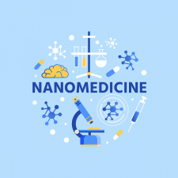

Image

À l’échelle nanométrique, tous les rêves sont permis. Même ceux de Paul Ehrlich, qui imaginait des « balles magiques » au début du XXe siècle : des drogues ciblant les agents infectieux et épargnant les cellules de l'hôte. La nanomédecine est en train de relever le défi, et a été une source de grands espoirs au cours des 20 dernières années, avec ses nouvelles techniques de diagnostic, de thérapie et de suivi des patients. Maintenant que plusieurs produits sont sur le marché et qu'un niveau de maturité a été atteint avec des objets de plus en plus complexes dans les laboratoires, cette révolution exige dorénavant des gages supplémentaires de sécurité et de qualité, que les industriels, régulateurs et métrologues déploient progressivement.
S’ils sont longtemps restés inconnus du grand public, les nanomédicaments ont été mis sur le devant de la scène en 2020, avec le développement des vaccins à ARN messager pour endiguer la Covid-19. Les nanoparticules sont en effet au cœur de cette technologie vaccinale : l’ARNm est encapsulé dans des nanoparticules lipidiques (de minuscules gouttelettes de graisse), qui le protègent de la destruction une fois dans le corps et qui peuvent fusionner avec la membrane des cellules pour une administration sûre et efficace. De quoi ensuite permettre aux cellules de produire les antigènes et leur réponse immunitaire.
C’est bien là tout le principe de la nanomédecine. Il s’agit d’associer un principe actif et un véhicule de taille nanométrique, appelé « vecteur ». L’enjeu est de transporter la molécule directement jusqu’à la zone infectée, pour la traiter sans endommager les cellules saines autour. Autrement dit, accroître l’efficacité thérapeutique et réduire la toxicité des traitements. La taille nanométrique (10-9 m) est en effet l'échelle de nombreux mécanismes biologiques dans le corps humain. Les nanoparticules et nanomatériaux peuvent franchir les barrières naturelles et accéder à de nouveaux sites d'administration de médicaments, interagir avec l'ADN ou les petites protéines à différents niveaux, que ce soit dans le sang ou à l'intérieur des organes, tissus et cellules.
La nanomédecine ne peut plus cependant être considérée comme un simple système d'administration de médicaments, car les nanomatériaux eux-mêmes peuvent devenir le principe thérapeutique actif. L'utilisation d'une nouvelle classe de nanoparticules améliorant le rayonnement pourrait par exemple constituer une approche révolutionnaire pour le traitement local des tumeurs solides traitées par radiothérapie. Enfin, les nanotechnologies trouvent aussi leur intérêt dans l'imagerie médicale. Certaines nanoparticules constituées d’un cœur luminescent et recouvertes d’agents de reconnaissance spécifiques permettent par exemple de détecter et « d'éclairer » des tumeurs cancéreuses.
Trois générations de nanovecteurs ont ainsi vu le jour (1) :
Il y a encore dix ans, la nanomédecine était considérée principalement dans les laboratoires de recherche. Comme expliqué par l’ETPN, elle a aujourd’hui déjà fait une différence concrète au niveau clinique dans le traitement du cancer et d'autres maladies et a atteint un nouveau niveau de maturité (1). Diverses formulations sont déjà approuvées par les régulateurs pour le traitement du cancer, les thérapies de remplacement du fer, les anesthésiques, les traitements fongiques, la lutte contre la dégénérescence maculaire ou encore contre certaines maladies génétiques rares. Rien que ces trois dernières années, l’Agence européenne des médicaments (EMA) a marqué de son approbation trois nouvelles solutions et ainsi accéléré la révolution en cours :
Parallèlement, à travers le monde, on dénombre aujourd’hui plus de 400 essais cliniques axés sur la thérapie et le diagnostic, signe du dynamisme du secteur.
Le LEEM souligne toutefois certains freins à lever, notamment via la création d’un réseau aux méthodes qualifiées pour répondre aux questionnements de qualité et sécurité soulevés par l’usage des nanotechnologies dans les médicaments.
De leur côté, les chercheurs éprouvent le besoin de méthodes fiables pour caractériser les propriétés physico-chimiques (attributs de qualité physique) qui influencent la sécurité et l'efficacité des produits médicaux basés sur les nanotechnologies. À l’instar de l’un des pionniers du nanomédicament, Patrick Couvreur (Institut Galien Paris-Saclay), expliquant ceci (4) : « Nous avons récemment découvert que la forme des nanovecteurs modifie la distribution du médicament dans l’organisme. ».
Quant à l’Agence Européenne du Médicament (EMA), elle émet ses réserves dans le document stratégique EMA Regulatory Science to 2025 (5) : « Le rythme de l'innovation dans le domaine de la nanomédecine s'est accéléré de façon spectaculaire ces dernières années et les autorités de réglementation doivent être prêtes à soutenir le développement de médicaments de plus en plus complexes. [Il s’avère nécessaire] de développer et normaliser de nouvelles méthodes d'essai permettant l'évaluation de la qualité et de la sécurité des nanomédicaments. »
Car pour être mis sur le marché, un nanomédicament doit répondre aux mêmes critères de sécurité, d'efficacité et de qualité pharmaceutique que n’importe quel autre médicament. Mais, en raison de sa complexité structurelle, son évaluation pose des défis analytiques substantiels, par rapport aux médicaments moléculaires ou biologiques. L’EMA et la Food and Drug Administration (FDA / USA) ont défini la liste des attributs de qualité jugés pertinents (6) : la taille des particules, leur distribution granulométrique et leur polydispersité, la charge et les propriétés de surface, la charge médicamenteuse et le profil de libération du médicament, ainsi que la structure chimique et physique complexe de type « cœur-coquille ». Encore faut-il des méthodes de caractérisation validées et normalisées pour les mesurer précisément. Seules des données comparables et de haute qualité métrologique peuvent en effet faciliter le processus réglementaire, et le transfert clinique aux praticiens et patients.
Pour identifier les méthodes de caractérisation à normaliser, le projet européen REFINE, financé dans le cadre du programme Horizon 2020, a comparé les informations exigées pour les produits de santé basés sur les nanotechnologies aux méthodes existantes et aux besoins réglementaires. Ces recherches, dont les résultats ont été publiés en 2021 (6), vont permettre de guider les efforts de normalisation face aux lacunes méthodologiques recensées dans cinq grands domaines :
Divers projets de R&D ont déjà permis d’émettre des recommandations pour la caractérisation des vésicules extracellulaires (VE). Ces dernières sont prometteuses pour la médecine régénérative, en raison de leur capacité à franchir les barrières biologiques (notamment hémato-encéphalique) et à délivrer les molécules à certaines cellules pour en modifier l’activité. Elles ont aussi pour avantages une faible immunogénicité (ce qui évite une réponse immunitaire neutralisant l’activité thérapeutique) et un haut potentiel d’ingénierie (ajout d’agents de ciblage, etc.).
Fin 2021, le groupe Extracellular Vesicle translatiOn to clinicaL perspectiVEs – EVOLVE France, a ainsi publié un document de synthèse (7) sur le développement de nanomédicaments à base de VE, avec des recommandations pour la fabrication, le contrôle qualité, l'analyse, le développement non clinique et les essais cliniques, conformément à la législation européenne actuelle. Il y fait notamment des préconisations sur :
De leur côté, les projets européens METVES (2012 – 2015) et METVES II (2019 – 2022), financés dans le cadre du programme EMPIR organisé par EURAMET, ont apporté de premières réponses métrologiques. METVES II, auquel contribue le LNE, se concentre plus particulièrement sur la pré-normalisation des mesures de concentration des VEs, en développant des matériaux de référence contenant des particules stables dont les concentrations, la fluorescence, les indices de réfraction et les tailles sont proches de ceux des VE.
Dans le cadre du nouveau programme européen de recherche en métrologie (EPM), qui prend la suite d’EMPIR, le LNE coordonne en 2022 dans le cadre de l’appel « Métrologie pour la santé » (8) le montage d’un nouveau projet intitulé Metrology for Nanotherapeutics.
Ce projet vise à développer et valider différentes approches analytiques liée aux lacunes méthodologiques identifiées par le projet REFINE (propriétés de surface, charge et libération des médicaments, propriétés cinétiques dans des milieux biologiques complexes) dans les cas de nanoparticules d’oxydes métalliques et de nanoparticules lipidiques.
À savoir qu’un second appel sur la thématique « Métrologie pour la santé » est prévu en 2026, et des appels pré-normatifs sont organisés tous les ans pour soutenir le développement de normes d’essais.
En parallèle de ces démarches de R&D, des infrastructures de caractérisation permettent de créer des passerelles entre le législateur, les métrologues et les organismes de normalisation. A la clé : des méthodes d’essais harmonisées et validées pour accompagner l’industrie face aux exigences réglementaires et aux enjeux d’innovation.
Aux États-Unis, le laboratoire de caractérisation des nanotechnologies de l'Institut National du Cancer (NCI-NCL) a été la première infrastructure de ce genre en 2004, mise en place en collaboration avec la FDA et le NIST (laboratoire national de métrologie américain). L’Europe a suivi en 2015, avec la création du laboratoire européen de caractérisation des nanomédicaments (EUNCL), qui n’a cependant pas survécu à la fin du projet qui avait permis sa mise en place. Outre leur apport d’expertise en caractérisation de nanomédicaments, ces structures mettent à la disposition des parties prenantes de nombreux protocoles d’essais harmonisés (SOP).
Les infrastructures de caractérisation avancée du LNE (AFM métrologique, plateformes CARMEN, MONA, NAEL) et les expertises en métrologie de ses équipes permettent de détecter, caractériser et quantifier les nanomatériaux utilisés en nanomédecine. Que ce soit dans des formulations vierges, des matrices biologiques, des cellules ou des tissus.
Plus récemment, en 2021, afin de soutenir le dialogue entre scientifiques de tous horizons - industrie, réglementation, recherche -, le NPL (laboratoire national de métrologie britannique) a organisé un atelier intitulé « Advancing Measurement Technologies and Standards for Nanomedicine » (9), en collaboration avec le NIST, le JRC (UE) et AstraZeneca sur les avancées récentes et les défis pratiques sur ces problématiques de caractérisation. Cela a permis d'identifier et classer par ordre de priorité les méthodes et les normes spécifiques nécessaires pour aller de l'avant compte tenu des nouvelles priorités émergentes. Les systèmes d'administration à base de lipides ont ainsi été identifiés comme prioritaires pour la normalisation et le développement de matériaux de référence. Ces systèmes jouent en effet un rôle primordial dans les vaccins anti Covid-19 et le traitement du cancer.
Porté par le LNE, le centre NanoMesureFrance sera opérationnel d’ici à fin 2022. Répondant au souhait national de structurer une filière industrielle des nanomatériaux, il rassemblera en un seul lieu un réseau d’acteurs aux compétences complémentaires : fabricants et intégrateurs de nanomatériaux, fabricants d'instruments de mesure, prestataires de services, plateformes académiques, instituts de recherche. Il s’agit de créer les conditions propices au développement d’applications à partir des nanomatériaux pour de multiples domaines, dont celui de la nanomédecine en travaillant sur le partage d’information et la mise en place de collaboration pour avancer sur le développement, la validation et l’harmonisation des méthodes de caractérisation selon les priorités notamment définies par les autorités réglementaires nationales et européennes.
Aujourd’hui, la normalisation progresse déjà. Au niveau européen, le CEN n’a encore rien lancé sur la nanomédecine, tout en exprimant la volonté d’initier des activités à travers le TC 352 Nanotechnologies, la Pharmacopée Européenne (10) considérant également le sujet comme central. Ce n’est pas le cas au niveau international où de multiples activités sont déjà en cours.
Le comité ASTM/E56 Nanotechnologies travaille par exemple à produire plusieurs documents portant notamment sur l’analyse des formulations de médicaments liposomaux par Fractionnement Flux-Force-G4F (WK68060) ou la caractérisation de l'encapsulation, de l'extraction et de l'analyse de l'ARN dans les formulations de nanoparticules lipidiques (WK75607). Ou encore, il a élaboré trois normes- récemment approuvée -, sur la quantification des lipides par chromatographie liquide couplée à la spectrométrie de masse, à la diffusion de lumière par évaporation ou à détecteur d'aérosols chargés.
De son côté, le comité ISO/TC 229 Nanotechnologies s’attache à développer une norme sur la terminologie des liposomes (ISO/AWI TS 4958), et une autre sur les nanoémulsions contenant de l’ARN.
Enfin, au sein du VAMAS (Programme de Versailles sur les Matériaux de Pointe et les Normes), initiative internationale active dans le domaine de la pré-normalisation pour les matériaux avancés au sein de laquelle le LNE représente la France dans le Comité de Pilotage, le groupe de travail TWA40 planche sur le profilage physico-chimique des particules de type viral comme matériaux de référence, pour le développement de vaccins et le diagnostic des particules virales.
Participant aux travaux menés au sein de l’ISO/TC 229 et de l’ASTM/E56, ainsi que dans les discussions au niveau de la Pharmacopée Européenne (10), le LNE contribue aux efforts de normalisation et aux documents d'orientation sur les liposomes et les formulations à base de lipides. Affaire à suivre.
[1] https://www.sciencedirect.com/science/article/pii/S0168365920303825
[2] https://www.ema.europa.eu/en/medicines/human/EPAR/spikevax
[3] https://www.ema.europa.eu/en/medicines/human/EPAR/comirnaty
[4] https://www.universite-paris-saclay.fr/actualites/patrick-couvreur-un-pionnier-du-nanomedicament
[6] https://www.sciencedirect.com/science/article/pii/S0168365921003035?via%3Dihub
[7] https://www.sciencedirect.com/science/article/pii/S0169409X2100394X?via%3Dihub
[8] https://metpart.eu/health-call-2022
[9] https://www.npl.co.uk/surface-technology/nano-med-webinar
[10] https://www.edqm.eu/en/quality-requirements-for-nanomedicines